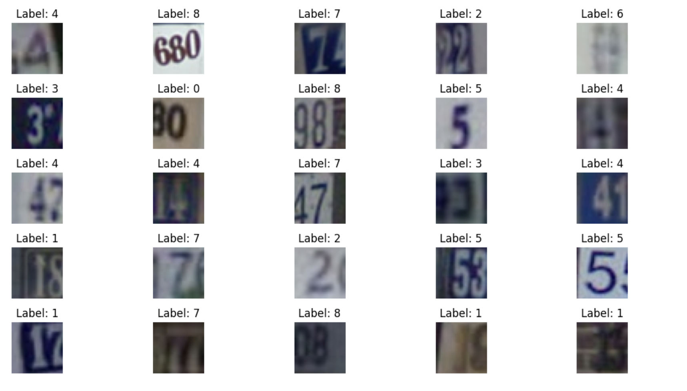
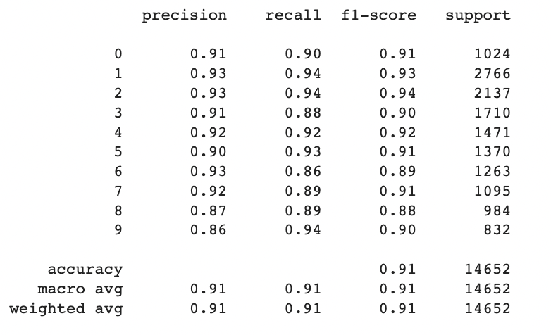
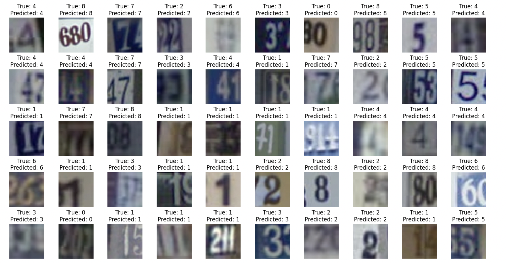

Developing a Convolutional Neural Network (CNN) Model for Accurate House Number Classification in the SVHN Dataset: Importance and Applications
Introduction
The main goal of this project is to develop a CNN model capable of accurately classifying house numbers in the Street View House Numbers (SVHN) dataset. The SVHN dataset consists of images containing house numbers from real-world scenarios, such as street addresses, storefronts, and building exteriors.
Applications
Accurate house number classification in the SVHN dataset has several practical applications and benefits. Here are some reasons why developing a Convolutional Neural Network (CNN) model for accurate house number classification is important:
Address Recognition: Accurate classification of house numbers is crucial for address recognition systems used in various domains. These systems play a significant role in mail delivery, emergency services, navigation, and other applications that rely on accurate identification of specific locations.
Automated Data Entry: A reliable house number classification model can be used for automated data entry tasks, such as populating address fields in forms or databases. This reduces manual effort and potential errors associated with manual data entry.
Urban Planning and Infrastructure Development: Accurate classification of house numbers can aid in urban planning and infrastructure development. It helps government agencies and urban planners gather crucial data about building density, population distribution, and address verification for planning public services, transportation routes, and utilities.
Data Analysis and Insights: Analyzing house number data from the SVHN dataset can provide valuable insights into urban environments, demographics, and spatial patterns. It enables researchers and organizations to understand trends, patterns, and correlations related to housing, urban development, and neighborhood characteristics.
Improving Navigation Systems: Accurate house number classification can enhance navigation systems by providing precise guidance and directions to specific addresses. This is particularly beneficial for delivery services, ride-sharing platforms, and navigation apps that rely on accurate address recognition.
Automation and Efficiency: By automating the process of house number classification, tasks that depend on accurate address identification can be performed more efficiently, saving time and resources. This can improve the overall workflow and operational efficiency in industries such as logistics, transportation, and emergency services.
Accessibility and Inclusion: Accurate house number classification can contribute to accessibility and inclusion efforts. It ensures that people with visual impairments or those who rely on assistive technologies can receive accurate audio-based guidance and directions when navigating urban environments.
In summary, developing a CNN model for accurate house number classification in the SVHN dataset brings numerous benefits, including improved address recognition, automation of data entry tasks, urban planning insights, enhanced navigation systems, increased efficiency, and better accessibility for all individuals.
Data Description
The Street View House Numbers (SVHN) dataset is a collection of real-world images that contain house numbers from various scenarios, including street addresses, storefronts, and building exteriors. The dataset is derived from Google Street View images and has been widely used for tasks related to digit recognition and multi-digit number classification.
Key Features:
Image Format: The dataset consists of RGB images in a variety of sizes and aspect ratios. Each image represents a real-world scene containing one or more house numbers.
Labeling: The dataset provides accurate bounding box information and label annotations for the digits present in each image. This information allows for precise digit localization and classification.
Multi-digit Numbers: The SVHN dataset includes images with single-digit numbers as well as those with multiple digits. The dataset provides information about the location, order, and labeling of each digit within a multi-digit number.
Large-Scale Dataset: The SVHN dataset is relatively large, containing tens of thousands of labeled images for training, validation, and testing. It offers a diverse range of real-world scenarios, capturing variations in fonts, colors, backgrounds, and digit appearance.
Training, Validation, and Testing Sets: The dataset is typically divided into three separate sets: a training set used to train the model, a validation set used for hyperparameter tuning and model selection, and a testing set for evaluating the model's performance on unseen data.
Class Distribution: The SVHN dataset is typically labeled with the digits 0-9 as the classes. The dataset's class distribution ensures a balance of examples for each digit, providing equal representation across the different digits.
The SVHN dataset serves as a valuable resource for developing and evaluating models for digit recognition, multi-digit classification, and address-related tasks. It offers a realistic and challenging dataset that reflects the complexity and variations encountered in real-world house number recognition scenarios.

Project Steps
Data Exploration and Preprocessing:
Explore the SVHN dataset to understand its structure, including image format, labels, and annotations.
Preprocess the dataset by resizing images, normalizing pixel values, and handling any class imbalances.
Split the dataset into training, validation, and testing sets.
CNN Model Architecture Design:
Design a suitable CNN model architecture for house number classification.
Determine the appropriate number and configuration of convolutional layers, pooling layers, and fully connected layers.
Consider techniques such as dropout and batch normalization for regularization and improved generalization.
Model Compilation:
Compile the CNN model by specifying the loss function, optimizer, and evaluation metric.
Choose the appropriate loss function for multi-class classification (e.g., categorical cross-entropy).
Select an optimizer such as Adam or RMSprop to optimize the model's parameters.
Model Training:
Train the CNN model using the preprocessed training dataset.
Set the number of epochs and batch size for training.
Monitor the model's performance on the validation set and consider early stopping if necessary.
Model Evaluation:
Evaluate the trained model's performance on the testing dataset.
Calculate accuracy, precision, recall, and F1 score to assess the model's classification performance.
Analyze and interpret the evaluation results to gain insights into the model's strengths and weaknesses.
Model Fine-tuning and Optimization:
Fine-tune the CNN model by adjusting hyperparameters (e.g., learning rate, regularization strength) based on validation results.
Experiment with different model configurations and architectures to optimize performance.
Consider techniques like transfer learning or ensembling for improved accuracy.
Predictions and Visualization:
Utilize the trained model to make predictions on new, unseen house number images.
Visualize and analyze the model's predictions to gain insights into its classification decisions.
Present the results and findings in a clear and interpretable manner.
Classification Report

The classification results indicate the precision, recall, and F1-score for each class in the house number classification task. Here is a summary of the performance metrics:
Precision: Precision is the measure of how many of the predicted positive instances are actually true positives. It represents the accuracy of positive predictions. Overall, the precision values for most classes range from 0.86 to 0.93, indicating a relatively high level of accuracy in correctly identifying the respective house number class.
Recall: Recall, also known as sensitivity or true positive rate, measures the proportion of actual positive instances that are correctly identified. The recall values for most classes range from 0.86 to 0.94, indicating a good ability of the model to capture true positives.
F1-score: The F1-score is the harmonic mean of precision and recall, providing a balanced measure of the model's performance. The F1-scores for most classes range from 0.88 to 0.94, reflecting a reasonable balance between precision and recall.
The accuracy of the model on the entire dataset is 0.91, indicating that the model achieves an overall accuracy of 91% in classifying house numbers.
In general, the model performs well with high precision, recall, and F1-scores across most classes, suggesting it has learned to classify house numbers accurately
Result Visualization

Conclusions
In conclusion, the developed Convolutional Neural Network (CNN) model for house number classification in the Street View House Numbers (SVHN) dataset has demonstrated goog performance. The model achieved an overall accuracy of 91% in classifying house numbers, indicating its ability to accurately identify and classify house numbers in real-world scenarios.
The precision values, ranging from 0.86 to 0.93, highlight the model's accuracy in correctly identifying positive instances, while the recall values, ranging from 0.86 to 0.94, indicate its capability to capture true positives. The balanced F1-scores, ranging from 0.88 to 0.94, further affirm the model's ability to strike a balance between precision and recall.
The high performance across most classes suggests that the CNN model has effectively learned the patterns and features necessary for accurate house number classification. It can be a valuable tool for address recognition systems, automated data entry tasks, urban planning and infrastructure development, data analysis, navigation systems, automation, and improving accessibility and inclusion efforts.
Further analysis, including the examination of the confusion matrix and potential fine-tuning, can provide insights into the model's specific strengths and weaknesses and guide future improvements. With its impressive performance, the CNN model offers promising potential for a wide range of applications that require accurate house number classification in real-world scenarios.